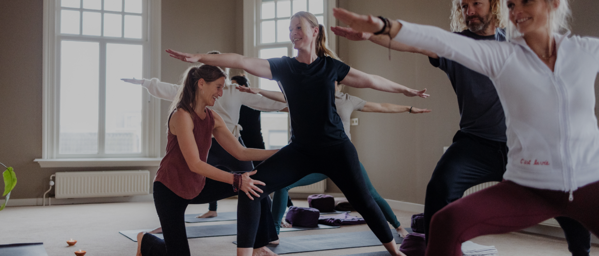

Investeer in vitale en veerkrachtige medewerkers
Wil je jouw medewerkers gezond, energiek en gemotiveerd houden? Dan zijn mijn workshops en trainingen iets voor jouw organisatie!
Verschillende organisaties ondersteun ik in het bevorderen van duurzaamheid, vitaliteit en preventief ziekteverzuim op de werkvloer.
Als gecertificeerd ademcoach zet ik ook ademwerk in; het is een hele mooi praktische en laagdrempelige manier om de mentale, emotionele en fysieke gezondheid van medewerkers te verbeteren. Daarnaast coach en begeleid ik medewerkers bij stress & burn-out.

Leer hoe je kunt herstellen van een ziekte of burnout met een persoonlijk plan, professionele begeleiding en ondersteuning van een groep.
Ik kom graag langs voor een vrijblijvend gesprek om de mogelijkheden te bespreken. Samen zorgen we voor een succesvol, leerzaam en vitaal programma voor jouw organisatie.
Bij iedere les of sessie is het mijn doel om mensen een gevoel van ’thuis komen’ te geven. Heb je een vraag of wil je een afspraak maken? Neem gerust contact met mij op.